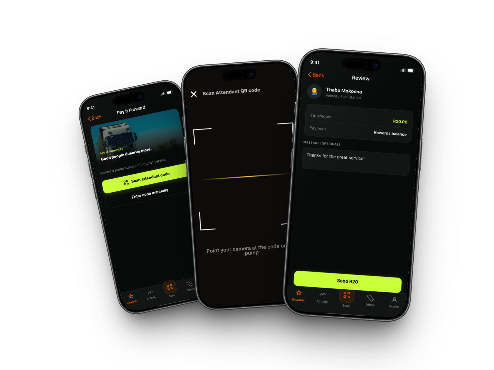
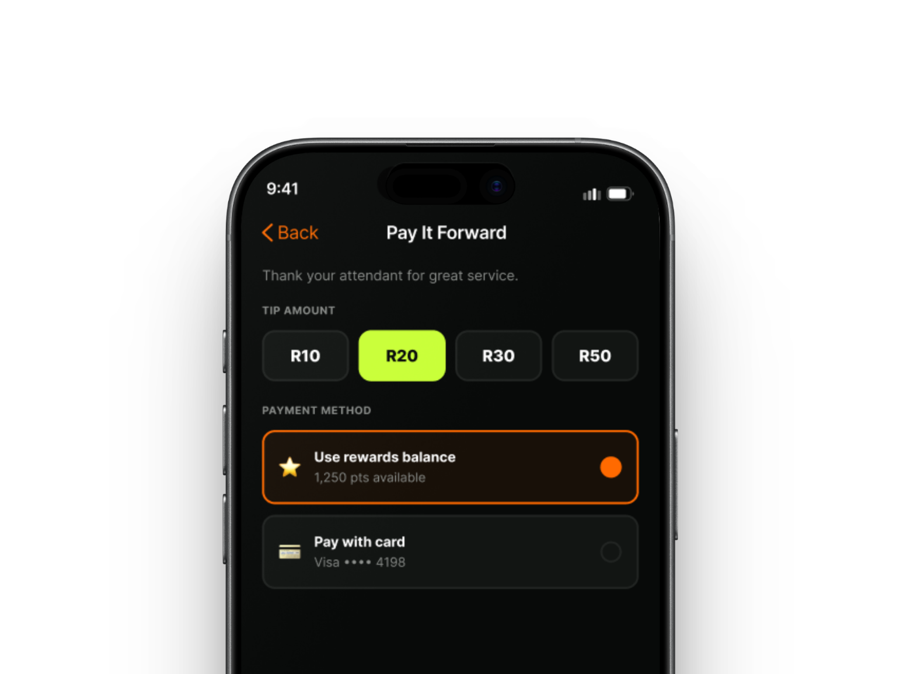
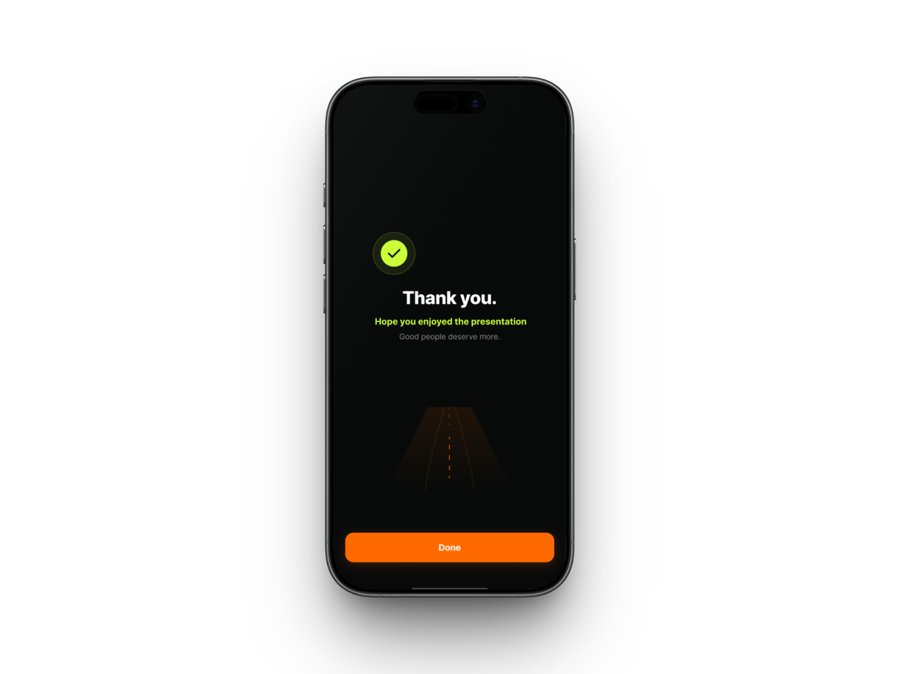

Make reward value visible, usable and flexible.
A self-directed exploration of how a fuel rewards programme could move from a largely invisible card-based experience to a focused digital MVP.

Invisible value gets abandoned.
The problem was not simply that rewards existed on a card. It was that customers could not easily see what they had earned, act on it during the fuel stop or use it with enough flexibility to make the programme feel relevant.
Use the market to frame hypotheses.
I audited fuel, banking and adjacent rewards models to identify mechanics associated with sustained engagement versus quiet abandonment. Because there was no primary user access, the output was treated as a hypothesis base for concept design rather than user-validated truth.
Four behaviours, not a long feature list.
One unified, visible rewards balance.
Redeem during the fuel stop.
Keep participation card-agnostic.
Separate digital tipping from rewards redemption so generosity remains transparent.
One programme, one balance.
Alternative considered
Separate fuel-points and convenience-store wallets that mirror the business structure.
Why I rejected it
Multiple balances recreate the fragmentation problem. A single visible number supports a simpler mental model and makes programme value easier to understand.
Designing control into the moment at the pump.



Turn directional hypotheses into evidence.
The next step would be usability testing and primary research with motorists and attendants to validate reward visibility, redemption comprehension, tipping trust and the card-agnostic participation model.